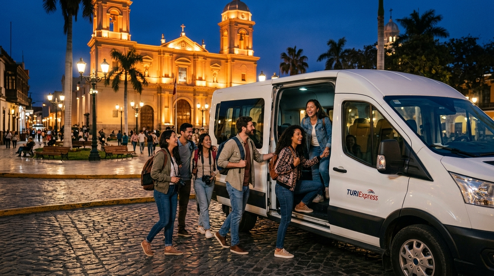
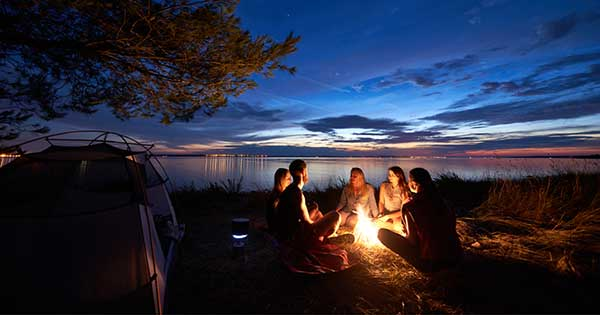

🌊 Tour destacado
Una noche mágica navegando el río, cocinando carne seca con chifles y compartiendo historias bajo las estrellas.
Reservar este tourEmpezamos el recorrido en la Plaza de Armas de Piura y nos dirigimos al Ecofundo Playa del Río, donde te espera una experiencia auténtica: un paseo en bote al atardecer, una fogata con carne seca y chifles recién hechos, y la mejor compañía para conectar con la esencia piurana.
Un vistazo a la experiencia: el río al atardecer, la fogata y los sabores piuranos.





Encuentro con el guía y el grupo. Briefing del tour y salida puntual.
Llegada al Ecofundo y navegación por el río Piura. Apreciaremos el atardecer mientras nuestro guía nos comparte historia y leyendas del lugar.
Los mejores spots del río para que te lleves un recuerdo increíble.
Encendemos la fogata y comienza la experiencia gastronómica. Prepararemos en vivo nuestra carne seca al fuego y la degustaremos con los deliciosos chifles piuranos. Además compartiremos un momento de música en vivo, donde nuestro guía cantará algunas de nuestras canciones más representativas de nuestra región y país.
Regreso a la Plaza de Armas de Piura. Fin del tour.
Reserva ahora y asegura tu lugar en el próximo tour.
Reservar este tour